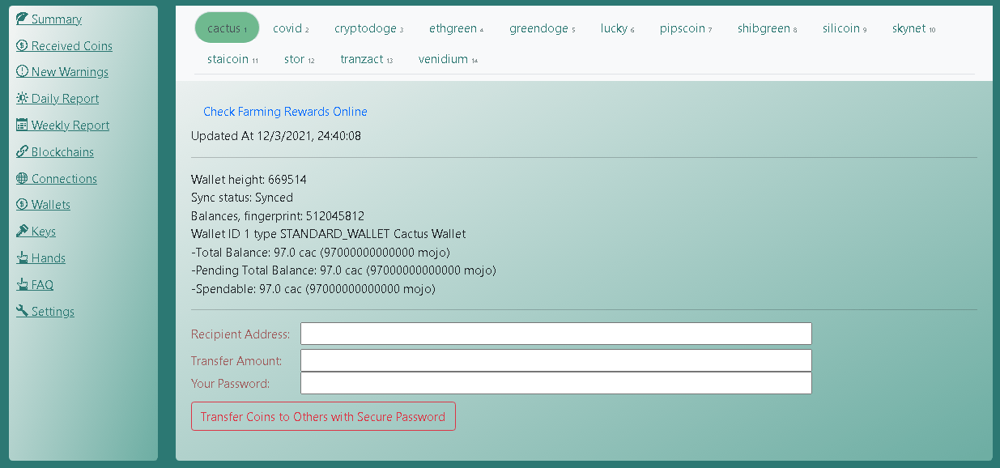

Coctohug - Verwalten Sie Dutzende von Chia-Blockchain-Forks-Mining über einen Webbrowser!
- Schöne Lokalisierung mit Unterstützung von Dutzenden von Sprachen: English, العربية, Bulgarian, Catalan, Deutsch, Español, زبان فارسی, Français, Galego, Indonesian, Italiano, 日本語, 한국어, Português do Brasil, limba română, Русский, Serbian, Thai, Tagalog (Filipino), Türkçe, Українська, Vietnamese, 简体中文, 繁體中文
Einfache Einrichtung mit Schnellstart
Suchen Sie mehr Hilfe auf unserer Website / Github / Discussions / Discord.
Schnellstart
Allgemeine Einstellungen
Erweiterte Einstellungen
Empfohlene Vorgehensweise
Coctohug unter Linux-Betriebssystem einrichten
- Aufstellen Docker + Docker-Compose
- Zur Website gehen https://www.coctohug.xyz, Geben Sie dann alle erforderlichen Formularfelder ein und laden Sie die generierten gezippten Docker-Compose-Dateien herunter
- Entpacken Sie die heruntergeladenen Ordner und kopieren Sie sie in Ihr Arbeitsverzeichnis
- Führen Sie alle Ordner nach Reihenfolge aus:
cd coctohug0 && docker-compose up -d
cd ../coctohug1 && docker-compose up -d
cd ../coctohug2 && docker-compose up -d
cd ../coctohug3 && docker-compose up -d
...
- Öffnen Sie den Browser und greifen Sie mit der URL auf die WebUI zu http://localhost:12630/
- Hinweis 1: Starten Sie nicht mehr als 5 Blockchain-Forks gleichzeitig, da Chia-Blockchain-Forks beim ersten Node-Sync wirklich CPU verbrauchen
- Hinweis 2: Für jede Blockchain-Fork werden ungefähr 1,8 G RAM benötigt. Wählen Sie also einige Blockchain-Forks basierend auf Ihrem Computerspeicher aus
- Hinweis 3: Wenn Probleme auftreten, müssen Sie möglicherweise alle Ordner der Reihe nach erneut ausführen:
cd coctohug0 && docker-compose up -d
cd ../coctohug1 && docker-compose up -d
cd ../coctohug2 && docker-compose up -d
cd ../coctohug3 && docker-compose up -d
...
- Hinweis 4: Möglicherweise müssen Sie die zulässigen Ports von 12630 bis 12700 in Ihren System-Firewall-Einstellungen hinzufügen
Coctohug unter Windows einrichten
Coctohug unter Mac OS einrichten
Passwort
- Sie werden aufgefordert, ein Passwort für sichere Einstellungen festzulegen, wenn Sie zum ersten Mal mit der URL auf die WebUI zugreifen http://localhost:12630/
- Zu den sicheren Einstellungen gehören: Cold Wallet, Coin Transfer, Restart Blockchain Forks, Harvester...
Schlüssel
- Sie werden aufgefordert, die 24 mnemonischen Wörter einzugeben, wenn Sie zum ersten Mal mit der URL auf die WebUI zugreifen - dies dient hauptsächlich der Landwirtschaft
- Oder Sie können einen völlig neuen Schlüssel generieren - dies ist hauptsächlich für Cold-Wallet-Zwecke gedacht
Bergbau
- Sobald die Knotensynchronisierung abgeschlossen ist, sollte die Landwirtschaft automatisch starten
- Dann können Sie den Mining-Status auf verschiedene Weise überwachen

Überwachung
- Die Registerkarte "Zusammenfassung" kann Folgendes anzeigen: Gesamte abgebaute Münzen, Kontostand, Grundstücksanzahl, Grundstücksgröße, Netspace-Größe und Erwartete Zeit bis zum Gewinn
- Jedes Blockchain-Fork-Panel auf der Registerkarte "Zusammenfassung" hat einen hellgrünen Hintergrund, wenn es einwandfrei funktioniert, andernfalls ist es ein hellgelber Hintergrund
- Sie können Details auch auf anderen Registerkarten untersuchen
NFT-Wiederherstellung
Gefundene Blöcke / Erhaltene Münzen
- Gesamtzahl gefundener Blöcke auflisten
- Gesamtzahl der erhaltenen Münzen auflisten

Bergbauwarnungen
- Mögliche Netzwerkprobleme auflisten
- Auflisten möglicher Signapoint-Probleme
- Listen Sie mögliche Probleme mit der Festplattensuche auf
- Listen Sie mögliche Probleme mit der Verringerung der Plotanzahl auf
Tagesbericht
- Gefundene Blöcke / erhaltene Münzen nach Tag zusammenfassen
- Mining-Warnungen nach Tag zusammenfassen

Wöchentlicher Report
- Gefundene Blöcke / erhaltene Münzen nach Woche zusammenfassen
- Mining-Warnungen nach Woche zusammenfassen
Knotensynchronisierung
- Der Knoten wird standardmäßig automatisch synchronisiert
- Sie können zur Registerkarte Verbindungen oder Blockchains gehen, um den detaillierten Status zu überprüfen
- Um Ihre Knotensynchronisierung zu beschleunigen, https://alltheblocks.net/ bietet Knotenliste und Datenbankdatei (klicken Sie auf jede Blockchain und Sie finden sie im oberen rechten Abschnitt)
Verbindungsverwaltung
- Alle Knotenverbindungen auflisten
- Sie können Verbindungen auf der Registerkarte Verbindungen hinzufügen/entfernen

Geldbörsenverwaltung
- Wallet-Status und Kontostand auflisten
- Sie können Münzen auch im Wallet-Tab überweisen

Handmanagement
- Dies ist jeder Blockchain-Fork-Worker
- Sie können eine Hand entfernen, wenn Sie nicht mehr vorhaben, sie zu farmen
Münzen transferieren
- Gehen Sie zum Wallet-Tab und geben Sie Ihr sicheres Passwort ein, um Coins zu transferieren
Kalte Brieftasche
- Gehen Sie mit Ihrem sicheren Passwort zur Registerkarte Einstellungen
- Cold Wallet-Konto exportieren
1. Bereiten Sie eine neue Maschine vor (anders als bei einer Mining-Maschine)
2. Besuch https://www.coctohug.xyz und klicken Sie auf Wallet-Modus, um Docker-Compose-Ordner zu generieren
3. Richten Sie die Docker-Compose-Ordner ein [Coctohug unter Linux-Betriebssystem einrichten]
4. Generieren Sie dieses Mal auf dem WebUI-Startbildschirm einen neuen Schlüssel
5. Warten Sie einige Minuten, bis die Blockchain-Forks neu gestartet werden
6. Gehen Sie zu jedem Ordner und führen Sie das Skript aus docker-compose stop && docker-compose up -d
7. Besuch http://localhost:12630/, und gehen Sie zu Einstellungen - Registerkarte Cold Wallet, um die Cold Wallet-Adressen zu exportieren
8. Bestätigen Sie manuell, dass jede Adresse korrekt ist, indem Sie die heruntergeladene Datei mit den Informationen vergleichen, die auf der Registerkarte „Schlüssel“ angezeigt werden
9. Holen Sie sich 24 mnemonische Wörter durch ein ähnliches Terminalskript
docker exec -it coctohug-flora flora keys show --show-mnemonic-seed
docker exec -it coctohug-covid covid keys show --show-mnemonic-seed
docker exec -it coctohug-lucky lucky keys show --show-mnemonic-seed
- Cold Wallet-Konto importieren
1. Rufen Sie auf Ihrem Mining-Rechner die Einstellungen auf - Registerkarte Cold Wallet
2. Importieren Sie die zuvor heruntergeladene Cold Wallet-JSON-Datei
3. Warten Sie einige Minuten und gehen Sie zum Wallet-Tab, um zu sehen, ob die Cold Wallet-Adresse aktualisiert wurde oder nicht
4. Hinweis: Wir empfehlen Ihnen, Ihre Wallet-Konfigurationen vor dem Importieren zu sichern

Sichere passphrasierte 24 mnemonische Wörter
- coctohug-passphrase kann verwendet werden, um Ihre 24 mnemonischen Wörter zu sichern
- Es verschlüsselt Ihre Schlüssel mit einem Passwort, das nur Sie kennen
- Sie können es mit dem Passwort entschlüsseln, wenn Sie neue Blockchain-Forks hinzufügen
Blockchain-Forks
- Überprüfen Sie coctohug github alle paar Tage
- Neue Blockchain-Forks werden sehr bald unterstützt
Mähdrescher
Aktualisierung
- Einzeiliges Skript
docker-compose stop && docker-compose rm -f && docker-compose pull && docker-compose up -d --force-recreate
- Sie können die obigen Skripte auch Schritt für Schritt ausführen
docker-compose stop
docker-compose rm -f
docker-compose pull
docker-compose up -d --force-recreate
- Im Falle eines inkompatiblen DB-Problems können Sie die vorhandene Datenbankdatei entfernen, bevor Sie das Docker-Compose-Startskript ausführen, indem Sie
rm ~/.coctohug-web/db/coctohug.sqlite
Lokale Sprache
- Wählen Sie oben rechts in der WebUI die Sprache aus, die Ihnen am besten gefällt
- Sie können später zu anderen Sprachen wechseln, wenn Sie möchten
Hardware-Anforderungen
- Nach der Synchronisierung sollten Intel® Core™ i7-Prozessoren der 10. Generation für das Farmen von mehr als 50 Blockchain-Forks ausreichen
- Für die anfängliche Knotensynchronisierungsphase frisst es jedoch wirklich CPU. Wir empfehlen daher, 5 Blockchain-Forks pro Gruppe einzurichten und Gruppe für Gruppe zu starten
- Der erforderliche Arbeitsspeicher entspricht: Anzahl der Mining-Blockchain-Forks multipliziert mit 1,8 G RAM
- Normale Festplatte sollte für 50+ Blockchain-Forks in Ordnung sein
Open-Source-Projekte auf Github
webui
cactus
covid
cryptodoge
ethgreen
flora
greendoge
lucky pipscoin
shibgreen
silicoin
skynet staicoin
stor
tranzact
venidium
Markenhinweis
CHIA NETWORK INC, CHIA™, die CHIA BLOCKCHAIN™, das CHIA PROTOCOL™, CHIALISP™ und das „Blattlogo“ (einschließlich des Blattlogos allein, wenn es sich auf Chia bezieht oder darauf hinweist), sind Marken oder eingetragene Marken von Chia Network, Inc ., ein Unternehmen aus Delaware. Es besteht keine Verbindung zwischen diesem Coctohug-Projekt und dem Hauptprojekt des Chia-Netzwerks.